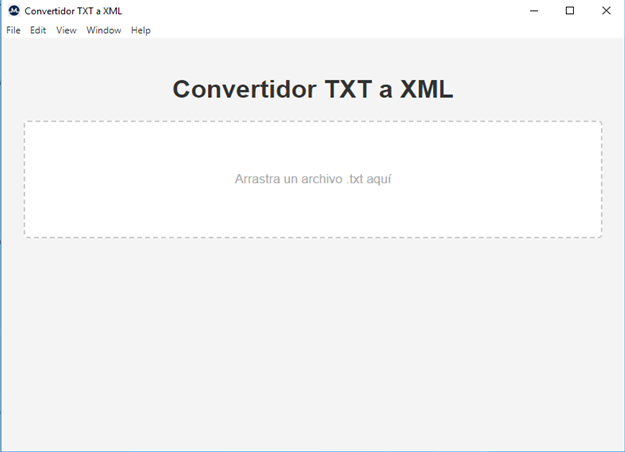

Características principales
Vista del sistema

Descripción / Description
Aplicación de código abierto para la conversión de listas de picos MALDI-TOF provenientes de sistemas comerciales de espectrometría de masas (como Vitek MS / Saramis RUO), a partir de archivos .txt, hacia formato XML compatible con la base de datos pública MicrobeNet (CDC).
Diseñada bajo criterios de eficiencia y facilidad de uso, la herramienta permite el procesamiento de archivos mediante drag and drop y se ejecuta íntegramente en entorno local, garantizando independencia de servicios externos y resguardo de la información.
Registrado ante la Dirección Nacional de Derechos de Autor (DNDA), conforme a la Ley 11.723 de Propiedad Intelectual, República Argentina (2025).
Open-source application for converting MALDI-TOF peak lists obtained from commercial mass spectrometry systems (such as Vitek MS / Saramis RUO), from .txt files into XML format compatible with the public MicrobeNet database (CDC).
Engineered with a primary focus on efficiency and usability, the application supports drag-and-drop file processing and operates entirely within a local environment, thereby ensuring independence from external services and preserving data integrity.
Registered with the Dirección Nacional de Derechos de Autor (Ley 11723), República Argentina (2025).